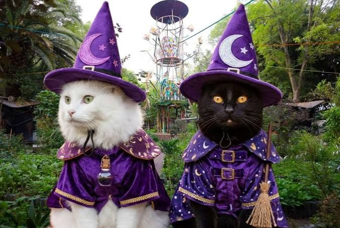

La calaverita de Lucio e Ismael
Estaban Lucio e Ismael
programando sin parar,
con su código en VS Code
que no dejaba de fallar.
La Flaca llegó a la escuela
con su guadaña en la mano:
"Vengo por dos estudiantes
que me esperan muy temprano".
Ismael, muy asustado,
se escondió tras un cajón;
Lucio dijo: "No me lleves,
que me falta mi botón".
La Calaca vio el monitor
y se puso a revisar:
"Les faltó un punto y coma,
¡ya los voy a reprobar!".
Pero Lucio, muy astuto,
su botón hizo funcionar,
y una lluvia de dulces
a la Muerte hizo bailar.
Ismael salió del cajón
con su michi brujo al lado,
y la Parca, muy contenta,
dijo: "Su código ha pasado".
Se llevó todos los dulces,
al panteón se fue a comer,
mas les dijo: "Suban todo
a GitHub antes de amanecer".